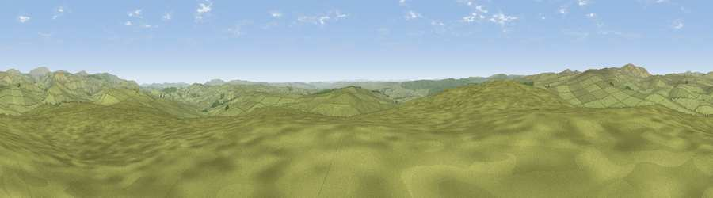

Viewpoint c12086_7685
#8243 in England · top 25% of its area beats it · —The view, rendered

A 360° render of this exact spot computed from the terrain model, tree cover and land cover — summer colours, afternoon light, calibrated against photographs of famous viewpoints. Real trees, hedges and buildings will differ in detail.
The panorama
Grey silhouette: terrain skyline in each direction (720 bearings, Earth curvature and refraction included). Dashed green: skyline with trees (+15 m) and buildings (+8 m) as obstacles. Blue strip: how far the ground is visible on each bearing.
Where the view opens
Wedge length = distance to the farthest visible ground on that bearing (vegetation-aware). Rings at 10, 25 and 50 km.
What fills the view
96% grassland · 4% woodland
Angular shares of the visible panorama (visual magnitude), not map area. Landscape diversity 0.08 (0–1 Shannon).
Key numbers
More beautiful places nearby
The staircase of upgrades: each row has a higher view potential than everything closer. Driving times are estimates from straight-line distance, calibrated against real road routing — check an actual route before setting out.
| Place | Direction | Drive | Score |
|---|---|---|---|
| Viewpoint near Rochester | S · 3 km | ~7 min | 66.4 |
| Viewpoint near Byrness | WSW · 5 km | ~11 min | 73.3 |
| Thirl Moor | NW · 5 km | ~12 min | 77.2 |
| Windy Gyle | N · 11 km | ~21 min | 79.7 |
| Wether Cairn [Wholhope Hill] | NE · 12 km | ~23 min | 80.7 |
| Viewpoint c12273_7856 | NE · 13 km | ~23 min | 83.7 |
| Viewpoint c12396_7887 | NNE · 19 km | ~32 min | 85.7 |
| Viewpoint near Kirknewton | NNE · 27 km | ~43 min | 86.1 |
55.33272, -2.24942 · source: screening · position refined by local search. Computed location — check access rights before visiting.